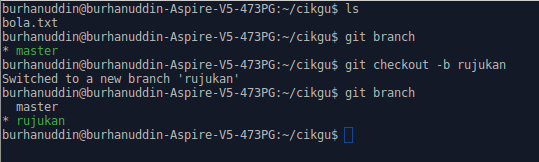

Branch
Branch bermaksud cabang. Kita boleh menganggap branch sebagai niat atau tujuan perubahan yang ingin kita lakukan.
Contohnya, katakanlah kita sedang menulis esei dan kita ingin menulis
pendahuluan, disebabkan tidak cukup masa, pendahuluan masih belum siap, maka
bahagian tersebut kita save dahulu dengan commit ke branch pendahuluan.
Esoknya, kita sambung menulis pendahuluan dan commit ke branch pendahuluan.
Setelah selesai, kita gabungkan branch pendahuluan dengan branch master.
Branch master ialah cabang utama untuk code. Dari contoh di atas, katakanlah
kita terus commit pendahuluan ke branch master, maka orang akan terus dapat
membaca pendahuluan yang masih belum siap.
Kita boleh membuat branch tidak kira berapa banyak yang kita mahu. Dengan ini,
kita boleh menggunakan branch jika kita berkerja dalam kumpulan. Contoh seorang
sedang menulis pendahuluan dalam branch pendahuluan dan seorang lagi sedang
menulis penutup dalam branch penutup. Jadi, mereka tidak perlu berebut mana
satu yang perlu save dahulu.
git branch
git branch ialah command untuk melihat senarai branch yang ada pada repository
kita. Jika anda mengikuti tutorial asas, anda boleh cuba git branch dalam
folder cikgu dan anda boleh lihat ada satu branch iaitu, master.
git checkout
git checkout ialah command untuk bertukar branch. Dengan menambah flag -b
menjadi git checkout -b, command tersebut boleh create branch. Sekarang cuba
create branch dengan nama rujukan
git checkout -b rujukan
Kemudian, taip git branch sekali lagi untuk melihat branch yang ada. Jika
diperhatikan dalam console, branch rujukan berwarna hijau dan mempunyai
asterisk(*) di tepinya. Ini menandakan sekarang kita sedang berada dalam
branch rujukan.

Sekarang kita cuba commit sesuatu dalam branch rujukan. Tambah tajuk untuk
seksyen rujukan. Kandungan file bola.txt akan menjadi begini,
cikgu suka main bola
hari-hari cikgu main bola
rujukan:
Kemudian buat seperti biasa,
git add bola.txt
git commit -m "Tambah seksyen rujukan"
File bertukar mengikut branch
Ini antara kelebihan Git. Cuba tukar ke branch master semula menggunakan git
checkout master. Kemudian, buka file bola.txt dan kita boleh melihat file
tersebut tiada seksyen rujukan. Tukar semula ke branch rujukan (git checkout
rujukan) dan seksyen rujukan kembali ada.
Kita boleh menggunakan teknik ini untuk membuat deployment. Katakanlah kita
membuat website. Code yang sudah siap berada di branch master. Kemudian, kita
nak tambah feature baru dalam website, kita commit feature baru ke branch dev
untuk development. Pada masa yang sama, bos suruh deploy website sekarang, maka
kita pun tukar ke branch master lalu deploy, kemudian tukar balik ke branch
devuntuk kembali sambung develop feature baru.
Sekarang kita siapkan branch rujukan yang kita buat sebelum ini, kita tambah
rujukan menjadi,
rujukan: masam masam manis - p ramli
dan seperti biasa,
git add bola.txt
git commit -m "Tambah rujukan"
Pastikan anda berada dalam branch rujukan semasa commit.
git merge
Ada dua cara untuk merge(gabungkan) branch ke branch master.
- Cara pertama, kita terus push branch yang baru ke website menggunakan
git push. Kemudian merge menggunakan website. - Cara kedua, kita guna command
git merge.
Untuk cara pertama, cuma perlu tukar master ke nama branch baru untuk push branch baru ke website, contohnya,
git push origin rujukan
Check website dan sepatutnya anda boleh lihat repository ada branch rujukan.
Ambil masa untuk meneroka website untuk mencari cara untuk merge. Setelah
berjaya, tukar branch ke master di komputer kita dan pull daripada master
(git pull origin master) untuk mendapatkan update terkini.
Untuk cara kedua, tukar branch ke master di komputer. Kemudian taip git merge
rujukan. Setelah selesai boleh push ke master (git push origin master).
Saya lebih suka menggunakan cara pertama kerana kita boleh melihat perubahan dengan lebih jelas di website.
Delete branch
Setelah berjaya merge, kita boleh delete branch menggunakan git branch -d
rujukan. Kadang-kadang kita tidak boleh delete jika branch tersebut seperti
masih belum merge, maka kita boleh menggunakan git branch -D rujukan jika kita
yakin kita sudah merge.